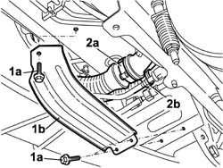
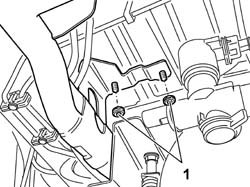
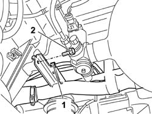
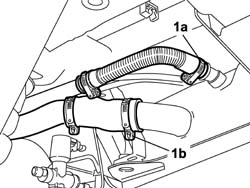

1040A08 Right CANISTER for CNG CANISTER ASSEMBLY - R.R.
- Path
- Procedures > 10 ENGINE > 1040 FUEL TANK AND PIPES > 1040A FUEL TANK AND COMPONENTS > 1040A08 Right CANISTER for CNG CANISTER ASSEMBLY - R.R.
- Kind
- repair procedure (removal / refitting; the operation number is the code)
- Applies to
- all engines; all production periods; only with equipment: BIPOWER
- Interactive page
- https://sloeber94.github.io/elrnDB-fDbl/en/#/2584515
Applies to: all engines; all production periods; only with equipment: Cargo trim level and BIPOWER
 Removing
Removing
 Refitting
RefittingDisconnect the battery negative terminal.
Place the car on a ramp.
1. Undo the bolts (1a) and remove the fuel pipe protection bracket (1b).
2. Remove the bands (2a) and (2b), then disconnect the fuel pipes connecting to the filler and the vent pipe.

Applies to: all engines; all production periods; only with equipment: Cargo trim level and BIPOWER
1. Undo the nuts securing the fuel pipe mounting bracket to the bodyshell.

Applies to: all engines; all production periods; only with equipment: Cargo trim level and BIPOWER
1. Release the anti-evaporation system pipes from the retaining clips.
2. Undo the bolt on the bracket securing the fuel pipe to the bodyshell.

Applies to: all engines; all production periods; only with equipment: Cargo trim level and BIPOWER
1. Remove the bands (1a) and (1b), then disconnect the pipes from the tank and remove them from the vehicle. Take care in case fuel leaks out.

Applies to: all engines; all production periods; only with equipment: Cargo trim level and BIPOWER
Refitting
RemovingPosistion the fuel pipes and connect them to the tank, securing them by means of bands.
Secure the fuel pipe supporting bracket to the bodyshell using the bolt.
Secure the anti-evaporation system pipes to the retaining clips.
Secure the fuel pipe mounting bracket to the bodyshell using the nuts.
 | Fastening | Component | Ø | Value (daNm) |
|---|---|---|---|---|
- | Nut | FUEL FILLER PIPE | M8 | (intermediate section) 2.4 |
Connect the pipes to the filler and vent pipe, securing them by means of bands.
Position the fuel pipe protective bracket and secure it with the bolts.
Remove the vehicle from the lift.
Use the correct equipment and appropriate protection as required by current safety legislation to fill the vehicle with the recommended fuel.
Connect the battery negative terminal.